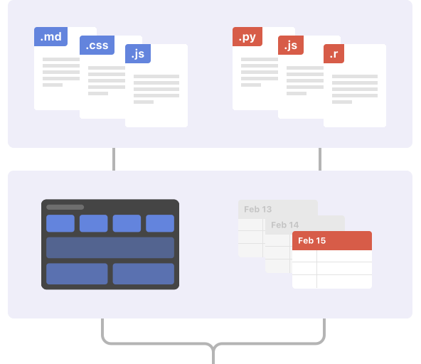

Présentation d’Observable Framework
Qu’est-ce que ObservableHQ Framework ?
ObservableHQ Framework est un générateur de sites statiques open-source conçu pour les applications de données, les tableaux de bord, les rapports et plus encore. Il combine une interface en ligne de commande pour automatiser les constructions et déploiements avec un serveur de prévisualisation pour le développement local.
Caractéristiques Principales
- Développement Local: Serveur de prévisualisation pour des mises à jour instantanées lors du développement.
- Génération de Site Statique: Compilations de Markdown, JavaScript et autres ressources en un site statique.
- Command-Line Interface (CLI): Pour automatiser les constructions et déploiements.
- Support Multilingue: Inclut des chargeurs de données pour SQL, Python, R, et plus.
- Thèmes et Bibliothèques: Thèmes conçus avec soin, grilles et bibliothèques pour des affichages de données qui s’adaptent à tous les appareils.
Structure d’un Projet
Un projet ObservableHQ typique comprendra :
- Markdown: Pour écrire du contenu et des instructions.
- JavaScript: Pour ajouter de l’interactivité et de la réactivité.
- Data Loaders: Pour intégrer des données dynamiques dans votre application.

Pourquoi Choisir ObservableHQ Framework ?
ObservableHQ Framework est idéal pour les statisticiens et les analystes de données qui souhaitent créer des applications de données interactives et des tableaux de bord. Avec sa capacité à intégrer des analyses de données complexes et des visualisations interactives, c’est un outil puissant pour partager des insights et des rapports détaillés.
Exemples :
- https://jaanli.github.io/american-community-survey/income
- https://waveform-analytics.github.io/wa_density_demo/
- https://m-clare.observablehq.cloud/boston-building-retrofits/
- https://boston-311-dash.netlify.app/
- https://observablehq.com/framework/examples/eia/
- https://observablehq.com/framework/examples/plot/
- https://observablehq.com/framework/examples/penguin-classification/